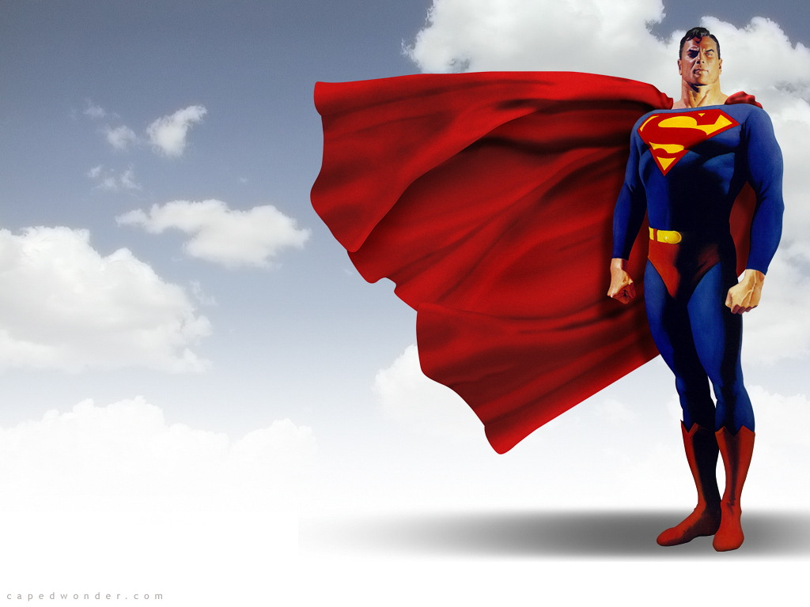
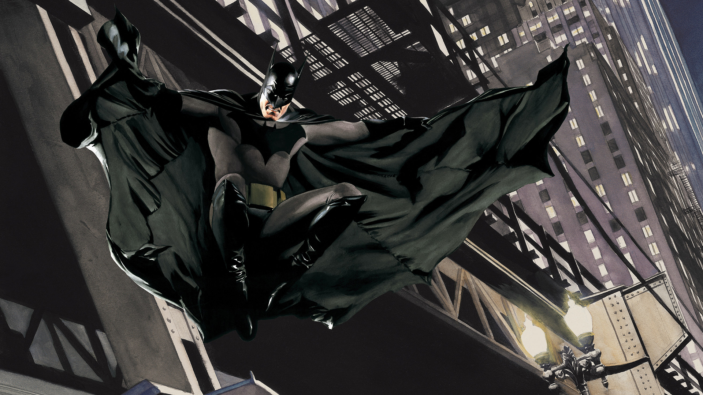
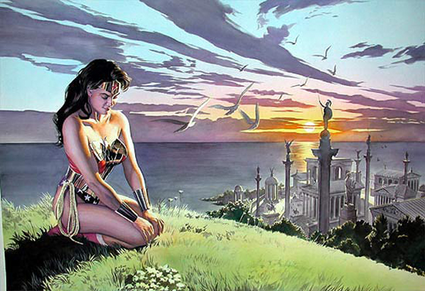
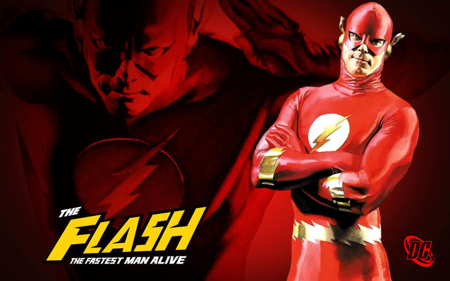
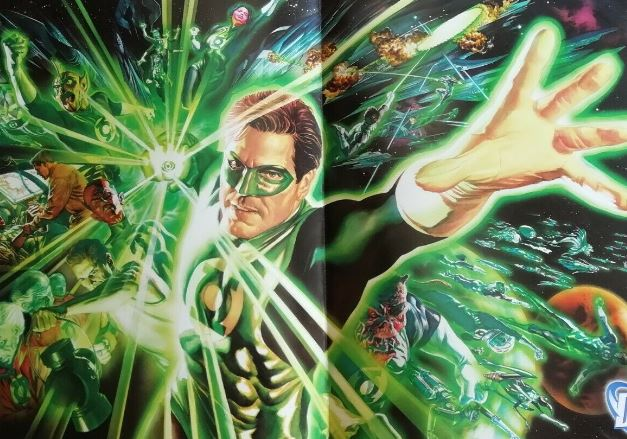

Esta pagina esta dedicada a los superheroes de DC

Nació en el planeta Krypton y recibió el nombre de Kal-El al nacer. Cuando era bebé, sus padres, el científico Jor-El, y su esposa Lara Lor-Van, lo enviaron a la Tierra en una pequeña nave espacial momentos antes de que Krypton fuera destruido en un cataclismo natural. Su nave aterrizó en el campo estadounidense, cerca de la ciudad ficticia de Smallville. Fue encontrado y adoptado por los agricultores Jonathan y Martha Kent, quienes lo llamaron Clark Kent.
Clark desarrolló varias habilidades sobrehumanas, como una fuerza increíble y una piel impermeable. Sus padres adoptivos le aconsejaron que usara sus habilidades en beneficio de la humanidad y decidió luchar contra el crimen como un justiciero. Para proteger su privacidad, se pone un traje colorido y usa el alias "Superman" cuando lucha contra el crimen.
Aunque denominado, algunas veces, de manera poco halagadora, como «el gran Boy Scout azul» por otros superhéroes, Superman también es conocido como «El Hombre de Acero», «El Hombre del Mañana» y «El Último Hijo de Krypton» por el público general de los cómics. Bajo la identidad de Clark Kent, Superman vive en medio de los humanos como un «tímido reportero» del diario Daily Planet de Metrópolis. Ahí trabaja junto a la reportera Lois Lane, con la cual ha sido vinculado románticamente. Junto con el fotógrafo Jimmy Olsen y el editor en jefe Perry White. Superman tiene una extensa galería de villanos con su archienemigo el supervillano Lex Luthor.

Batman (conocido inicialmente como Bat-Man y en español como el Hombre Murciélago) es un personaje creado por los estadounidenses Bob Kane y Bill Finger,13 y propiedad de DC Comics. Apareció por primera vez en la historia titulada «El caso del sindicato químico» de la revista Detective Comics N.º 27, lanzada por la editorial National Publications el 30 de marzo de 1939.
La identidad secreta de Batman es Bruce Wayne (Bruno Díaz en algunos países de habla hispana),141516 un multimillonario magnate empresarial y filántropo dueño de Empresas Wayne en Gotham City. Después de presenciar el asesinato de sus padres, el Dr. Thomas Wayne y Martha Wayne en un violento y fallido asalto cuando era niño, juró venganza contra los criminales, un juramento moderado por el sentido de la justicia. Bruce Wayne se entrena física e intelectualmente y crea un traje inspirado en los murciélagos para combatir el crimen, con sus gadgets de combate del batcinturón y sus vehículos.17
A diferencia de los superhéroes, no tiene superpoderes: recurre a su intelecto, así como a aplicaciones científicas y tecnológicas para crear armas y herramientas con las cuales lleva a cabo sus actividades. Vive en la mansión Wayne, en cuyos subterráneos se encuentra la Batcueva, el centro de operaciones de Batman. Recibe la ayuda constante de otros aliados, entre los cuales pueden mencionarse Robin, Batgirl (posteriormente Oráculo), Nightwing, el comisionado de la policía local, James Gordon, y su mayordomo Alfred Pennyworth. Una gran variedad de villanos conforman la galería de Batman, incluido su archienemigo, el Joker.

La Mujer Maravilla (en inglés: Wonder Woman) es una superheroína ficticia creada por William Moulton Marston para la editorial DC Comics. Es una princesa guerrera de las Amazonas, pueblo ficticio basado en el de las amazonas de la mitología griega. En su tierra natal es conocida como la princesa Diana de Temiscira pero fuera de esta utiliza la identidad secreta de Diana Prince.
Está dotada de una amplia gama de poderes superhumanos y habilidades de combate de batalla superiores, gracias a sus dones obtenidos de los dioses y su amplio entrenamiento. Ella posee un gran arsenal de armas, incluyendo entre las principales el Lazo de la Verdad, un par de brazaletes mágicos indestructibles, su tiara, que sirve como arma, y en algunos relatos, en la edad de oro, tuvo un avión invisible. Pero más adelante, se le fue mostrando con la capacidad de volar cada vez con mayor frecuencia por lo que el avión invisible fue dejando de utilizarse.
El personaje apareció como tal publicado por primera vez en la revista de historietas All Star Comics #8 (de diciembre de 1941)1 y con su alter-ego en el Sensation Comics #1 (de enero de 1942).2 El título de historietas de la Mujer Maravilla ha sido publicado por DC Comics casi continuamente a excepción de un breve período donde no tuvo serie en 1986.3 Su representación como una heroína que lucha por la justicia, el amor, la paz y la igualdad sexual ha llevado a la Mujer Maravilla a convertirse en un icono feminista.456 Creada durante la Segunda Guerra Mundial, el personaje fue representado inicialmente en su lucha contra las fuerzas militares de ocupación del Eje, así como una gran selección de supervillanos.
La Mujer Maravilla ha ganado un gran elenco formidable de enemigos empeñados en la eliminación de la amazona, incluyendo villanos clásicos como Baronesa Paula Von Gunther, Cheetah, Ares, Doctor Poison, y la bruja Circe, y entre los más nuevos como Maxwell Lord, así como también la enemistad y/o rivalidad de muchos dioses y monstruos de la mitología griega. Mujer Maravilla también ha aparecido regularmente en las historietas en los grupos de superhéroes como en la Sociedad de la Justicia de América (desde 1941) y la Liga de la Justicia (desde 1960).

Flash (conocido también como The Flash y traducido en español: Destello) es el nombre de varios superhéroes ficticios que aparecen en los cómics estadounidenses publicados por DC Comics.
Creado por el escritor Gardner Fox y el artista Harry Lampert, el "Flash" original apareció por primera vez en Flash Comics #1 (fecha de portada de enero de 1940 / mes de noviembre de 1939)
.1 Apodado el "Corredor Escarlata", todas las encarnaciones del Flash poseen "súper velocidad", que incluye la capacidad de correr, moverse y pensar extremadamente rápido, también puede atravesar la materia sólida, usar reflejos sobrehumanos y aparentemente violar ciertas leyes de la física, como superar la velocidad de la luz.
Hasta ahora, al menos cuatro personajes diferentes, cada uno de los cuales de alguna manera obtuvo el poder de "la Fuerza de la Velocidad", han asumido el papel del Flash en las historias de DC: el atleta universitario Jay Garrick siendo el primero en portar el título (1940-1951, 1961-2011, 2017-presente ), el científico forense Barry Allen (1956-1985, 2008-presente), el sobrino de Barry Wally West (1986-2011, 2016-presente) y el nieto de Barry Bart Allen (2006-2007).
Cada encarnación de Flash ha sido un miembro clave de al menos uno de los principales equipos de DC: Sociedad de la Justicia de América, Liga de la Justicia de América, Los Jóvenes Titanes y Young Justice. Wally West y Bart Allen originalmente fueron conocidos como Kid Flash, posteriormente asumieron el manto de Flash (Bart también era conocido como Impulso).

Linterna Verde (en inglés: Green Lantern) es el alias de varios superhéroes de la ficción del Universo DC, los cuales se caracterizan por un anillo de poder y la capacidad de crear manifestaciones de luz sólida con dichos anillos.
El primer Linterna Verde (Alan Scott) hizo su debut en julio de 1940 en el All-American Comics #16 (portada de Sheldon Moldoff) durante la Edad de Oro del Cómic estadounidense.1 Su creación se la debemos al guionista Bill Finger y al dibujante Martín Nodell.
Cada Linterna Verde posee un anillo de poder y una batería (en forma de linterna) que garantiza a su portador la "posibilidad" de manifestar una gran variedad de poderes. Algo común entre todos son el poder de volar y el hecho de que todos los efectos de poder se manifiesten acompañados de una luz verde. El anillo está considerado dentro del Universo DC como una de las armas más poderosas jamás creadas y como algo muy peligroso en las manos equivocadas. Mientras que el anillo del Linterna Verde de la Edad de Oro (Alan Scott) es impulsado por la magia, los anillos utilizados por los Green Lantern Corps son creaciones tecnológicas de los Guardianes del Universo, los cuales son asignados a aquellos candidatos que son considerados dignos de portarlos. Debido al poder del anillo, Green Lantern es considerado uno de los superhéroes más poderosos del Universo DC. Ya que son capaces de lograr contener Supernovas y Agujeros Negros.2 Varios de sus enemigos también son considerados como unos de los más trascendentales villanos del Universo DC como lo son Parallax o el Antimonitor mientras que Sinestro es el villano más habitual de Green Lantern
Tras la Segunda Guerra Mundial, cuando las ventas de los cómics de superhéroes en general se vieron disminuidas, DC cancelaría el título de Green Lantern tras su número 38 (mayo–junio de 1949), y el Alan Scott haría su última aparición en el 'All Star Comics #57 (1951). Cuando los superhéroes se volvieron a poner de moda en décadas posteriores, Alan Scott sería recuperado como Linterna Verde. Inicialmente, haciendo apariciones estelares en cómics de otros superhéroes, pero a la larga recibiría un papel regular en cómics donde la Sociedad de la Justicia hacía aparición. Nunca volvería a tener una serie propia.
En 1959, al comienzo de la Edad de Plata de los Cómics (y siguiendo el exitoso renacimiento de Flash tras el Showcase #4 en octubre de 1956), el editor de DC, Julius Schwartz asignaría al escritor John Broome y al artista Gil Kane la tarea de revivir el personaje de Linterna Verde. Esta nueva encarnación del personaje sería introducida en el Showcase #22 (septiembre–octubre de 1959) como el piloto de pruebas Hal Jordan, que se convertiría en miembro fundador de la Liga de la Justicia. En 1970, el escritor Denny O'Neil y el artista Neal Adams desarrollarían una serie de galardonadas historias de carácter innovador y socialmente conscientes bajo el título de Green Lantern/Green Arrow. En ellas se enfrentarían las sensibilidades de Flecha Verde (Green Arrow), con la orientación hacia la ley y el orden de Linterna Verde. Varias series con temas más cósmicos le seguirían, al igual que nuevos individuos que de forma ocasional o permanente tomarían el manto de Hal Jordan como Linterna Verde del sector 2814. Estos serían: el arquitecto y ex-marine John Stewart, el entrenador de Fútbol Americano Guy Gardner, el ilustrador Kyle Rayner, y por último el piloto de carreras ilegales y ladrón de coches Simon Baz.
Alan Scott y Jade han sido miembros de la Sociedad de la Justicia de América mientras que el resto de los Linternas Verdes de la Tierra han formado parte de alguna de las encarnaciones de la Liga de la Justicia. John Stewart apareció en las series animadas Justice League y Justice League Unlimited. Existe un aparente vínculo entre diferentes encarnaciones de los Linternas Verdes y los Flashes. Las amistades más notables han estado entre Alan Scott y Jay Garrick (el Linterna Verde de la Edad de Oro y el primer Flash), Hal Jordan y Barry Allen (el Linterna Verde de la Edad de Plata y el segundo Flash) y finalmente Kyle Rayner y Wally West (el Linterna Verde de la Edad Moderna y el tercer Flash).